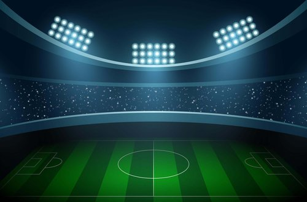
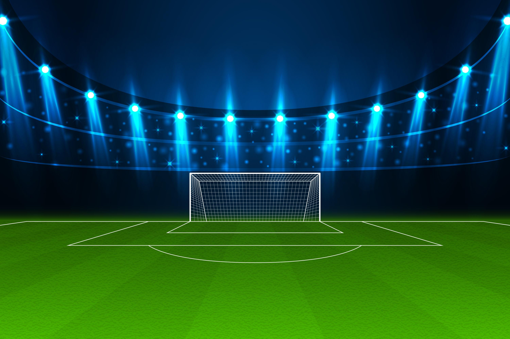

@if (ventanaPricipal) {
@defer {

}
}
@if (ventanaEstadistica) {
@defer () {

}
{{nombreTeam1}}
{{nombreTeam2}}
{{golesEquipo1}}
{{TOTALSHOTS_1}}
{{FOULS_1}}
{{OFFSIDES_1}}
{{CORNERS_1}}
90%
STATISTIC
GOALS
TOTAL SHOTS
FOULS
OFFSIDES
CORNERS
BALL POSSESSION %
{{golesEquipo2}}
{{TOTALSHOTS_2}}
{{FOULS_2}}
{{OFFSIDES_2}}
{{CORNERS_2}}
90%
}
@if (ventanaFinal) {
@defer () {
}
🥰✨ Felicidades ✨🥰
{{equipoGanador}}
}
@if (ventanaFinalEmpate) {
@defer () {
}
🥲 Pues es un 🥲
Empate
}